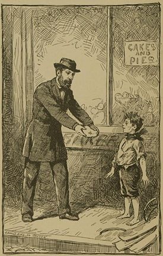

Sunday, September the 21st, 2008
back to: title, date or indexes

This is an emotionally wrenching, yet compellingly vapid scene from Prudence Foxglove's play Oh Lord! Let Us Give Vent To The Charitable Impulse By Offering Pies To Sordid Little Ragamuffins! (1894). Long forgotten, this knockabout tragicomic melodrama has been revived by the Bodger's Spinney Emotionally Wrenching Theatre Troupe, currently performing a sixteen-hour version on the pier at Pointy Town.